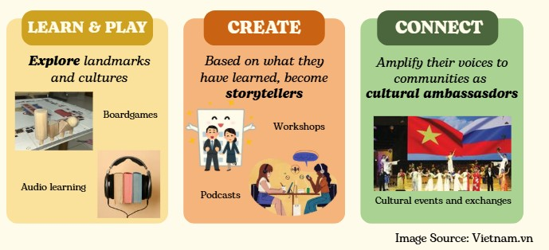

"True inclusion is not measured by how much support we provide, but by how many opportunities we create for every child to learn, contribute, and be heard."
This belief inspires my aspiration to build a sustainable social enterprise that empowers visually impaired children through accessible learning, creativity, and cultural exchange — not only helping them explore the world, but enabling them to shape it with their own voices.
When I first worked with visually impaired children, I was struck not only by the challenges they faced, but also by how easily those challenges were overlooked: many encounter barriers to education, recreation, and social participation simply because opportunities are rarely designed with accessibility in mind.
Yet what stood out to me most was not what they lacked, but what they had — talent, creativity, and a genuine eagerness to explore the world. I realised that the greatest barrier was never their potential, but the lack of opportunities for it to flourish.
How can we empower visually impaired children to explore, create, and share their voices?
Many opportunities to explore places, cultures, and stories remain inaccessible — primarily designed around sight.
Accessible recreational products remain extremely limited. Educational board games for visually impaired children are still nearly absent in Vietnam.
Visually impaired children are often viewed as recipients of support rather than individuals with valuable stories, talents, and perspectives to share.
Vision: To build a future where visually impaired children are recognised not only as learners, but also as creators, storytellers, and cultural ambassadors.
Mission: To empower visually impaired children through accessible learning and play, enabling meaningful participation and fostering connections with the wider community through culture and storytelling.

Turning this vision into lasting impact requires more than passion — it requires the ability to understand people, communicate purpose, and inspire action. This is why I believe RMIT's Digital Marketing program is the ideal place for me to grow.
Through project-based learning, industry collaboration, and data-informed marketing, I hope to design campaigns that foster greater understanding and inclusion, build cross-sector partnerships, and amplify the voices of visually impaired children.
Beyond the classroom, I look forward to contributing to and learning from RMIT's diverse community of students, academics, and industry partners. By testing ideas, refining this initiative, and collaborating across cultures, I hope to transform a single project into a sustainable social enterprise that creates lasting opportunities for visually impaired children to learn, create, and be heard.